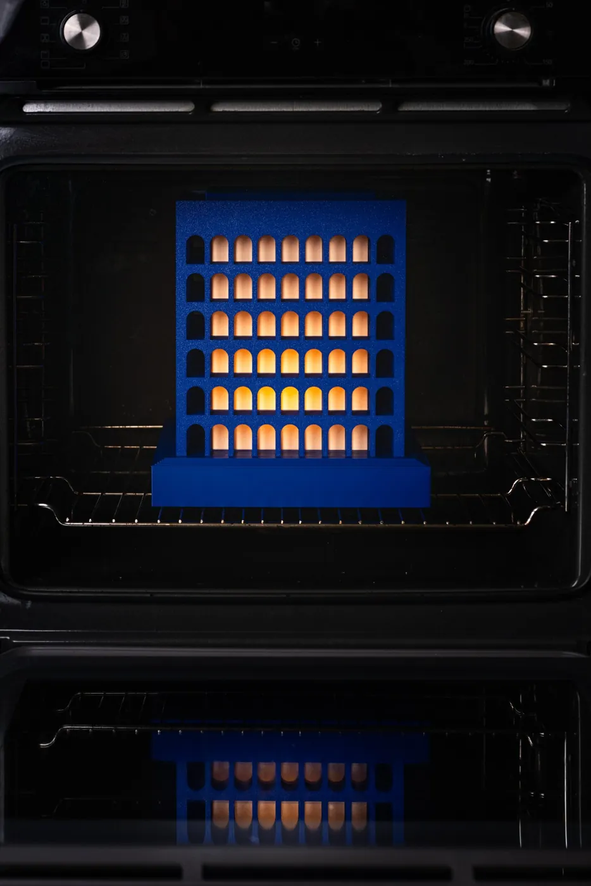
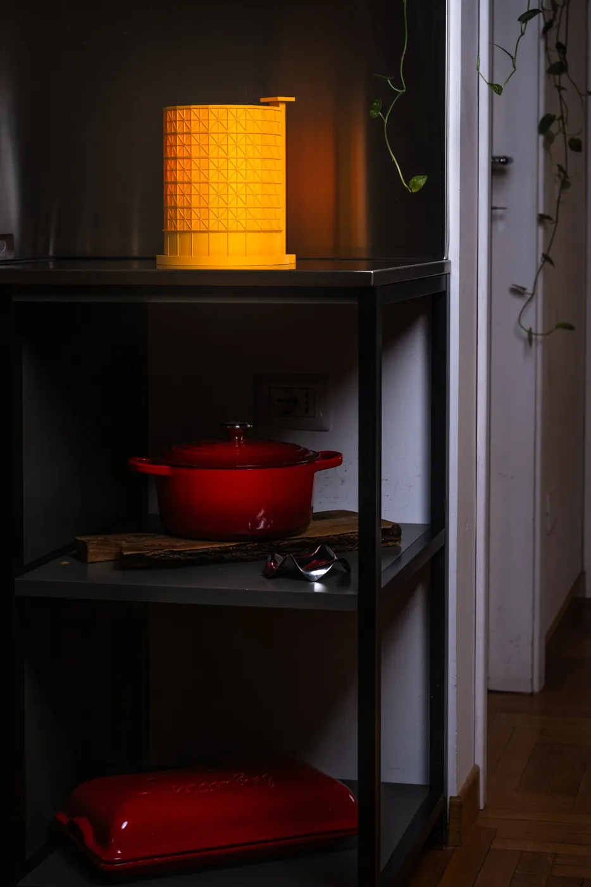
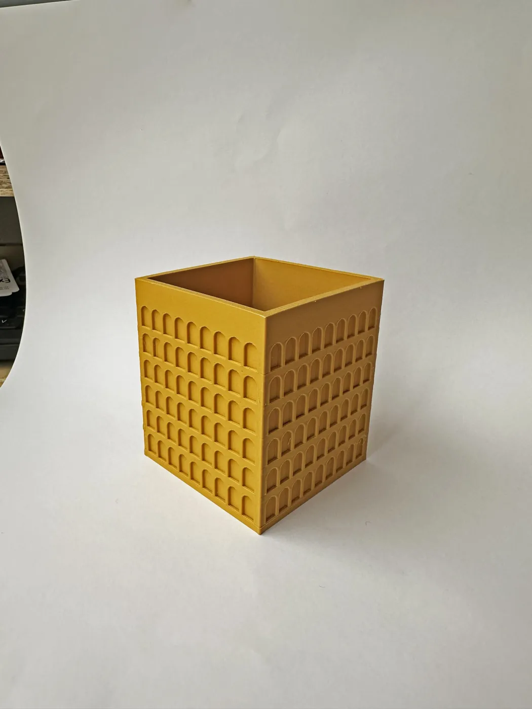
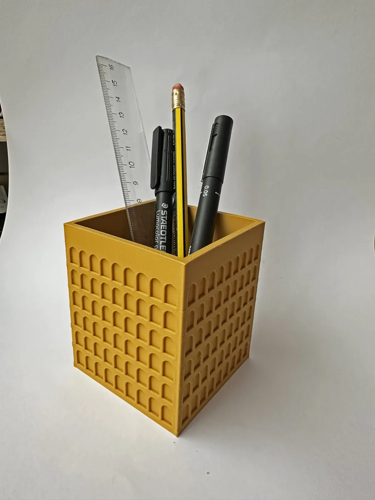
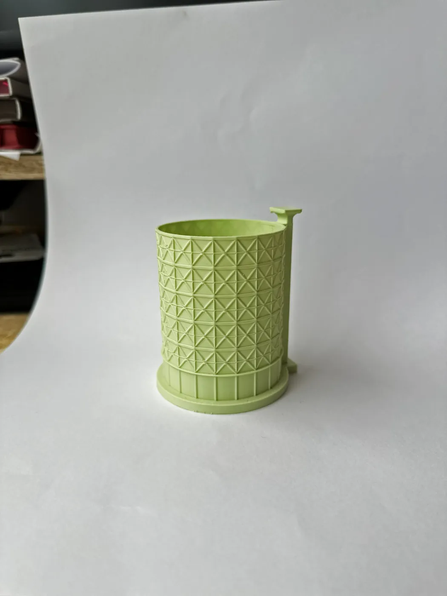
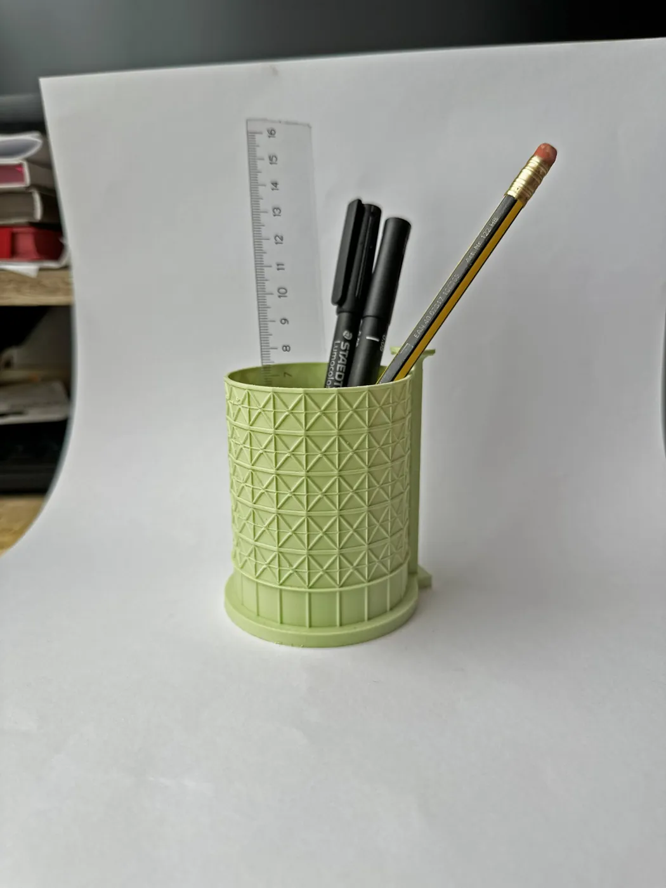
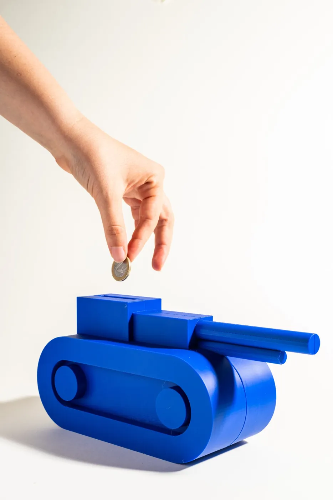
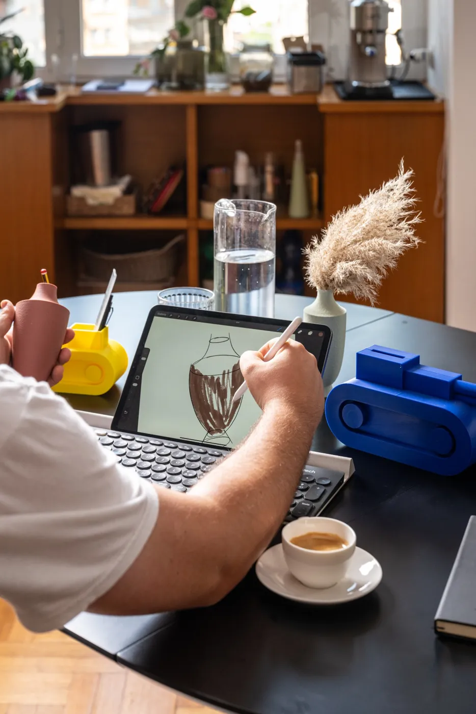
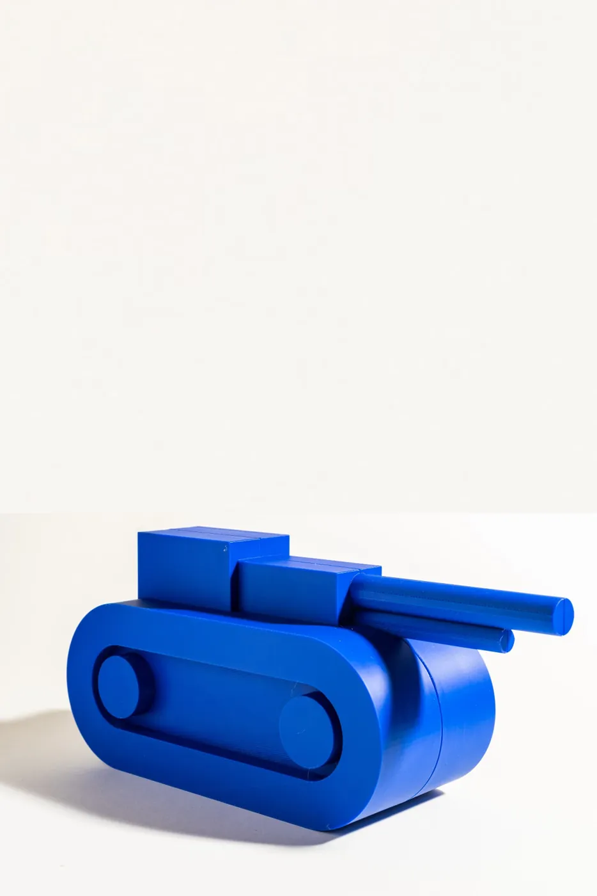
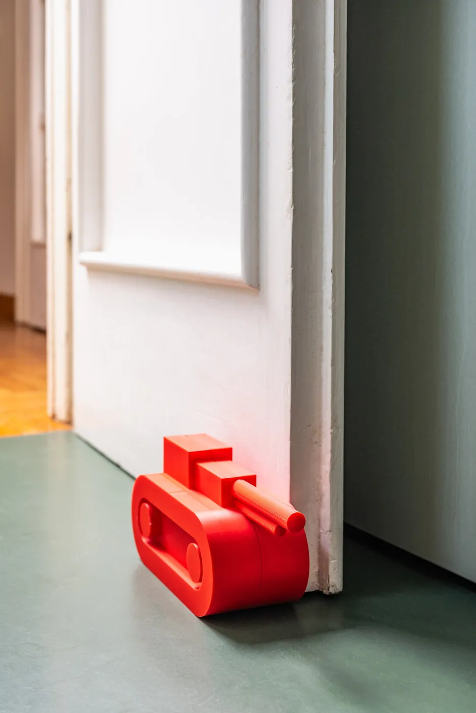

Civiltà
€ 95Ispirata al Palazzo della Civiltà Italiana all'EUR, opera di Guerrini, La Padula e Romano: la sequenza serrata dei suoi archi diventa un gioco di luce e ombra.
20 × 20 × 23 cmOgni oggetto è ideato, progettato e prodotto da noi a Roma, senza intermediari. Lampade ispirate all'architettura di Roma e oggetti dalle forme pop e dai colori pieni. Per acquisti e disponibilità, scrivici.
Architetture della città reinterpretate come lampade da tavolo. Ogni lampada è pronta all'uso: lampadina LED E14 inclusa (806 lm, luce calda 3000 K) e cavo con interruttore.

Ispirata al Palazzo della Civiltà Italiana all'EUR, opera di Guerrini, La Padula e Romano: la sequenza serrata dei suoi archi diventa un gioco di luce e ombra.
20 × 20 × 23 cm

Ispirata al Gazometro di Ostiense: la struttura reticolare dell'icona industriale di Roma, in versione da tavolo.
19,8 × 18,4 × 23 cm
Ispirata alle torri piezometriche della Stazione Termini, nate per rifornire d'acqua le locomotive a vapore e diventate un segno d'ingresso alla città per chi arriva in treno.
11,2 × 6,4 × 31,5 cm
Ispirata al Tempio di Ercole Vincitore al Foro Boario, a due passi dalla Bocca della Verità: il suo colonnato circolare si trasforma in un gioco di luce.
Ø 18,5 × 16,6 cm

Gli archi del Palazzo della Civiltà Italiana in formato da scrivania.
6,6 × 6,6 × 7,7 cm

Il reticolo del Gazometro per mettere ordine sulla scrivania.
7 × 7,5 × 8,8 cmQuattro linee, ognuna in più misure dello stesso stile: da soli o in composizione.

Ispirata all'arte giapponese della carta piegata: pareti sfaccettate che sembrano fogli piegati a mano, dove ogni piega cattura la luce e disegna un gioco di ombre.
5 misure · altezza 8,2–23,6 cm
Prende il nome dal comando di modellazione 3D che fa scorrere un profilo lungo un percorso, generando la forma come una traccia continua. Così nasce questa linea: un'unica sezione che si piega e si avvolge su sé stessa.
4 misure · altezza 14,5–19 cm
Una sezione a quattro lobi che si assottiglia verso l'alto e si apre in una piccola corolla. Un portafortuna da tenere in casa, in quattro misure.
4 misure · altezza 7,5–18,5 cm
Una rilettura contemporanea dei vasi dell'antica Grecia, ridotti alle forme essenziali. Una tecnica di stampa dedicata dona alla superficie una texture materica che ricorda la ceramica.
5 misure · altezza 8,5–18 cmCerchi i MossPoles? Hanno un catalogo dedicato: richiedilo.
Il carrarmatino da tavolo che tutti abbiamo spostato sulla mappa del mondo, ingrandito e messo al lavoro.

Il portapenne della squadra: presidia la scrivania e tiene in riga penne, matite e pennarelli.
19,2 × 6 × 8,5 cm

Il salvadanaio corazzato: i tuoi risparmi viaggiano sotto scorta.
25,6 × 8 × 11,3 cm

Il fermaporta: prende posizione e non arretra di un centimetro.
25,6 × 8 × 11,3 cmQualsiasi luogo del mondo, in rilievo: strade, edifici e rilievi ricostruiti in 3D e stampati in moduli da 20 × 20 cm, montati su un pannello di legno. Indicaci il punto, al resto pensiamo noi.
Altri formati su richiesta. Scegli colore di stampa e finitura del pannello.


Le collezioni sono disponibili per concept store, negozi di design, bookshop e garden center. Scarica il catalogo rivenditori o fissa una visita con i campioni.